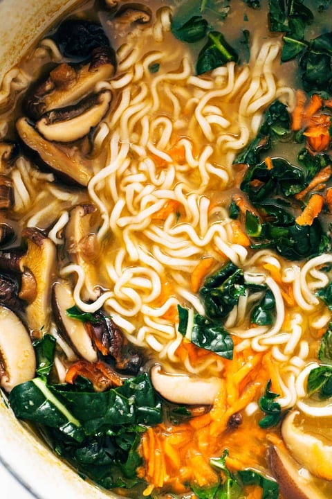

Ramen Noodles

Take the usual ramen up a notch with this quick homemade ramen. Fresh veggies and herbs make this extra delicious, healthy, and cozy!
1 tablespoon sesame oil
3 tablespoons grated ginger
4 teaspoons grated garlic
4 cups chicken broth
4 cups water
1 ounce dried shiitake mushrooms
2 packages instant ramen, noodles only!
1/2 cup scallions or chives
sriracha to taste
crunchy golden planko crumbs for topping
Steps
Heat the sesame oil in a large skillet over medium low heat. Add the garlic and ginger; stir fry for 2 minutes or until soft and fragrant.
Add the broth and the water. Bring to a simmer; add the mushrooms and simmer for 10 minutes or until the mushrooms have softened and the broth is flavorful.
Add the instant noodles to the hot liquid and simmer for an additional 5 minutes or until the noodles have softened. Add the scallions and stir to combine.
Remove from heat, stir in the kale and carrots, and top with crunchy panko crumbs (see notes) and a soft-boiled egg (optional). Season with chili oil, hot sauce, sesame oil, and/or soy sauce and salt to taste.